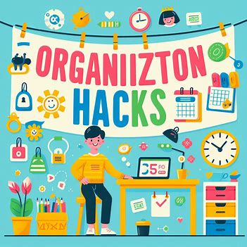

Welcome to our page dedicated to organization hacks! Here, you'll discover a wealth of ingenious tips and tricks designed to bring order and efficiency to every aspect of your life. From clever storage solutions and space-saving techniques to time management strategies and digital organization tools, our collection of hacks covers everything you need to streamline your routines, declutter your space, and reclaim control over your busy schedule. Whether you're looking to tidy up your home, optimize your workspace, or simply bring a sense of calm and clarity to your day-to-day life, you'll find practical solutions and creative ideas right here. So, dive in, explore, and unlock the secrets to a more organized and stress-free lifestyle!